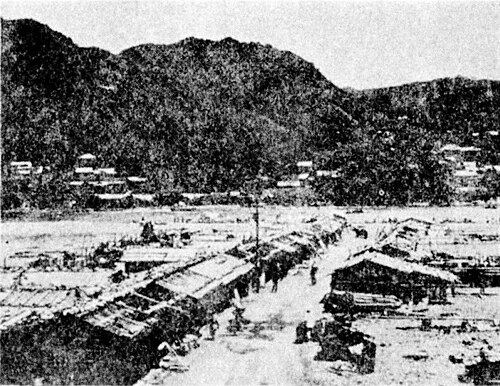
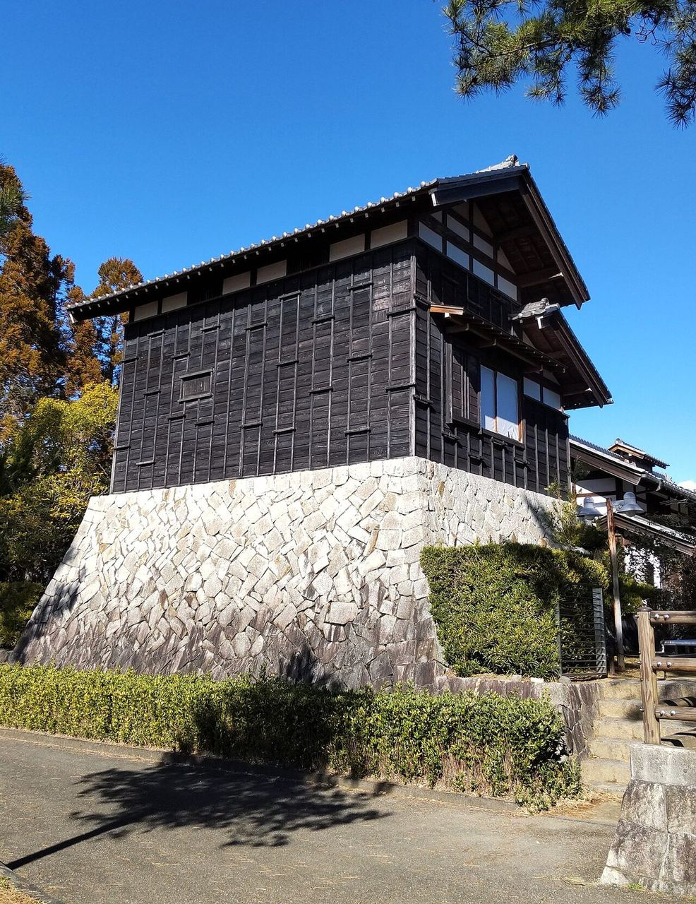

Shingū’s regional centrality is a direct expression of physical geography. The lower Kumano forms the outlet of a vast mountainous hinterland, while the Pacific opens the city toward maritime Japan. Goods, people, religious authority and political power accumulated precisely where these networks converged.
Ctrl / ⌘ + scroll to zoom · drag to pan
© OpenStreetMap contributors · MLIT 国土数値情報 · GSI · SRTM · Mie Pref. · imagery: 地理院タイル (GSI seamless photo) · buildings: 国土地理院最適化ベクトルタイル
1
Convergence created the city
The medieval Shimohonmachi port settlement, located on a natural levee roughly two kilometres above the river mouth, already occupied this strategic interface. Archaeology has revealed underground warehouses, smithing activity, boat nails, river-access stairs and ceramics arriving from distant parts of Japan, evidence of a port integrated into long-distance maritime exchange and the economic sphere of the Kumano religious institutions.
Map: ground contours at 3, 5, 7, 10, 20 and 40 m from the 5 m GSI laser elevation model; the site of 新宮下本町遺跡 lies under today’s Tankaku Hall, at the foot of the castle hill.
Click the pulsing point on the map: the hall that stands on the site today, and a drawing of what was found.
The early city consequently emerged through several overlapping functions:
1 sacred centre→2 river port→3 commercial settlement→4 castle town→5 timber entrepôt→6 railway city→7 regional service centre
Numbers match the map: each function left a place you can still find.
Each period reorganized movement while preserving Shingū’s basic role as an intermediary between interior and coast.
The castle itself embodied this relationship. Shingū Castle occupied Tankaku-yama (丹鶴山) above the river, while its Mizunote precinct descended toward a landing place and a row of charcoal warehouses. Mountain resources entered the city by river and continued toward coastal markets. The riverside economy extended into Kawaramachi, where merchants, inns, blacksmiths, restaurants, fishmongers, bathhouses and other businesses formed an intensely active commercial landscape. Historical documentation records almost 300 Kawaraya structures at its peak around the late Meiji and early Taishō periods.
Rail subsequently redirected urban movement. The Shingū Railway opened in 1913, a broad station approach reoriented the centre, and parts of the former castle moat were incorporated into the expanding twentieth-century city. The river-centred commercial morphology acquired a railway-centred layer; later road, medical and port development added further nodes. Shingū Port today remains Kinan’s only foreign-trade port, serving hinterlands extending into Mie and Nara while functioning simultaneously as a maritime gateway for Kumano tourism and cruise traffic.
The resulting city is best read as an urban palimpsest:
sacred landscape+medieval port+castle town+floodplain commerce+railway centre+port-industrial corridor+mountain settlements
This historical layering matters for resilience because contemporary risk management operates within a landscape already structured by centuries of accumulated infrastructure, attachment and regional function.
2
Morphology, sacred landscape and adaptation
Shingū’s physical form also reveals a distinctive relationship with environmental instability.
86%of the land on this sheet is forest
1,915 mHakkyō, the highest summit on the sheet
253 mGongen-yama, the hill behind Shingū
Map: GSI hill shading; forest from MLIT’s land-use mesh (L03-b, 2021); natural-park zones from MLIT A10 (2015), which covers national, quasi-national and prefectural parks without naming them, darker where specially protected; summits and heights from OpenStreetMap. Range names follow the line of their summits.
Kumano Hayatama Taisha, Kamikura Shrine, the river and the surrounding mountains belong to a sacred geography in which rock, water, forest and movement carry religious meaning. Pilgrimage connected these elements across the wider Kumano landscape; the river itself functioned historically as part of the approach toward Hayatama and today survives as a rare river pilgrimage route within the World Heritage landscape. Shingū’s tourism strategy (新宮市観光振興計画) continues to treat the Kumano River descent as a major cultural asset.
Physical geography therefore performs several functions at once:
watershed+transport corridor+sacred landscape+heritage asset+tourism resource+hazard system
Map: between Hongū and the mouth the same valley carries the river pilgrimage route (40.6 km), National Route 168, the river boats, the modelled L2 flood and road stretches inside landslide zones.
That multiplicity gives Shingū’s vernacular flood architecture particular significance.
Kawaraya 川原家 — mobility
The Kawaraya of Kawaramachi were assembled from interlocking members without nails. During frequent floods, residents could dismantle them, move the components onto safer ground and rebuild once water levels receded. The city’s history of Kawaramachi speaks of sudden floods said to come five or six times a year and presents this highly reversible building form as a distinctive local response.
Its spatial principle is remarkably sophisticated:
retain economic access to the river by making architecture mobile.

The floodplain remained productive because permanence was transferred from the individual structure to the continuity of activity.
Agariya 上がり家 — redundancy
Elsewhere along the Kumano system, Agariya created a complementary form of resilience: secondary spaces on higher ground for storage, refuge and temporary occupation. Documented examples within present-day Shingū municipality include settlements such as Shingū, Hitari, Kujū and Shitaki.

Together, the two forms encode different strategies:
Kawaraya → mobility of form
Agariya → redundancy of space
Both arose from an intimate reading of recurrent flood behaviour. Architecture absorbed hydrological variability directly into settlement practice.
Modern interventions reproduce the same logic at larger scales. Ring levees concentrate protection around selected settlements; building controls regulate residual exposure beyond them; urban pumps relocate water mechanically; tsunami planning organizes rapid movement toward elevation. The technologies have changed dramatically, yet the recurring spatial principles remain legible:
move what can move
elevate what must remain
concentrate protection where collective functions depend upon it
Map: the Onodani-gawa (相野谷川) ring levees at Takaoka and Funada (Kihō, Mie), the Ichida pumps and sluice, and designated tsunami refuges on high ground.
3
Four hazard pathways converge
Shingū’s risk geography becomes clearest when read directionally.
| Flow | Spatial system | Principal consequences |
|---|---|---|
| From the mountains | Kumano River watershed | fluvial flooding, sediment, dam operations, cascading infrastructure failure |
| From the city itself | Ichida-gawa drainage basin | pluvial flooding, backwater effects, pumping dependency |
| From the sea | Kumano-nada / Nankai Trough | earthquake, tsunami, coastal inundation |
| From the slopes | steep Kii hinterland | landslides, debris, road closure, settlement isolation |
Hover or tap a row to light up that system on the map; click to zoom out to all of it (⟲ returns).
17,785buildings in Shingū’s coastal lowland
5,566inside the L2 tsunami area
9,303inside the maximum-assumed river flood
62%inside at least one of the two
Buildings: GSI optimised vector tiles (国土地理院最適化ベクトルタイル, 2026), each counted by a point inside its footprint against the hazard areas drawn here, within Shingū City from the river mouth to Miwasaki and Sano. Zoom in to see every footprint, coloured by what reaches it.
These pathways intersect during major events.
Kumano River: risk generated at regional scale
Shingū lies at the downstream end of a river system extending through Nara, Mie and Wakayama. Rainfall and slope processes occurring far beyond the municipality therefore materialize locally as river discharge, sediment and infrastructure pressure.
The 2011 Kii Peninsula disaster demonstrated this cascading geography with exceptional clarity. In Shingū, Typhoon Talas caused 13 deaths, one missing person and damage to 2,968 homes, including 81 destroyed or washed away. Municipal records also document widespread failures of electricity, communications, water, roads and river infrastructure.
13deaths
1missing
2,968homes damaged
81destroyed or washed away
Shingū City disaster record (紀伊半島大水害新宮市記録集) (2011 Kii Peninsula flood). Peak discharge at Ōga ≈ 24,000 m³/s, the largest on record (MLIT).
The disaster unfolded as a chain:
extreme rainfall→runoff and slope failure→river flooding→transport disruption→settlement isolation→service failure
Its geography exceeded every individual administrative sector.
Ichida-gawa: risk generated inside the city
The much smaller Ichida-gawa exposes a different hydraulic vulnerability. Rain falling over urban Shingū drains toward the Ichida and then the Kumano. During a major Kumano flood, high main-river levels impede this drainage and create the possibility of backflow. The sluice gate closes; urban water must then be pumped mechanically into the swollen river.
The central question becomes almost diagrammatic:
Where does the city’s rain go when the regional river is already full?
Following severe internal flooding during Typhoon 21 in 2017, national, prefectural and municipal authorities expanded the Ichida system. The reinforced national pumping station, in full operation from 2024, raised national pumping capacity from 17.1 to 28.0 m³/s, alongside additional prefectural and municipal drainage measures.
Ichida therefore turns a small urban tributary into an unusually clear illustration of hydraulic interdependence: local drainage performance depends on the state of a much larger river system.
Nankai Trough: elevation becomes infrastructure
The Pacific introduces another temporal regime entirely. Wakayama’s 2026 maximum-class scenario (地震動予測及び津波浸水想定（令和8年公表）) gives Shingū a reference maximum tsunami height of 13 m and approximately five minutes until a 1 m tsunami height at the modelled reference point.
13 mmaximum tsunami height (2026)
5 minto a 1 m tsunami
92%of the modelled inundation area lies ≤ 300 m from dry ground
Map: L2 inundation shaded by walking distance over land to the nearest dry patch ≥ 1 ha (≤ 300 m · 300–600 m · > 600 m; at 1 m/s, 300 m ≈ 5 minutes). Inundation from the 2016 national dataset; the 2026 revision is published only as PDF maps. Building footprints (GSI): 5,566 stand inside the L2 inundation area.
Five minutes transforms topography into immediate life-safety infrastructure.
earthquake→autonomous decision→movement→elevation
The hills embedded within Shingū’s urban fabric consequently possess overlapping functions: sacred prominence, urban landmark, landscape identity and potential refuge. Tsunami resilience depends as much upon route legibility, mobility and local knowledge as upon absolute elevation.
From the slopes: the hinterland cuts itself off
The fourth pathway runs down the valley walls. Shingū City contains 549 designated sediment-disaster warning zones, 495 of them special warning zones: 353 for steep-slope collapse, 189 for debris flow and 7 for landslides. They crowd the narrow valleys, where roads, river and houses share the same strip of flat ground.
549warning zones in Shingū City
495of them special (red) zones
3,077slope failures in 2011, three prefectures
17landslide dams in 2011, none in Shingū
Zones: Wakayama Prefecture, 15 September 2026. 2011: Wakayama Prefecture and MLIT. Map: zones from MLIT A33 (Aug 2025), road stretches inside them in red, and the districts cut off in 2011.
In 2011 slopes failed across the three prefectures, releasing about 100 million m³ of sediment, the largest volume since the Second World War. Upstream the failures dammed rivers; in Shingū they cut roads. Route 168 and municipal roads broke at many points, isolating the whole of Takata, Ōga and Minami-Hizue and all of Kumanogawa-chō; supplies went in mainly by helicopter. The road to Takata reopened on 7 September, Route 168 between Miyai and Hongū on 11 September, and the last stretch from Miyai to the city on 14 October.
rain→slope failure→road cut→isolation→supply by helicopter
The pattern is old. In 1889, 1,080 slopes collapsed in the upper basin and 37 dammed lakes formed; at the mouth, the whole of Shingū town went under muddy floodwater.
Beyond the four pathways
The record adds slower pressures that the directional reading misses:
- Heat. Shingū’s weather station set its record of 39.6 °C on 8 July 2024. Days of 35 °C or more averaged 2.4 a year in the 1990s and 11.3 a year in 2020–2025, with 23 in 2024 alone.
- Rain intensity. The station’s records are 132.5 mm in one hour (4 September 2011) and 532.0 mm in one day (22 October 2017): the two floods this page keeps returning to.
- Shaking and fire. J-SHIS gives a 75% chance of intensity 6-lower or stronger within 30 years at the city centre, and Wakayama expects 6-upper in both of its Nankai scenarios. After the 1946 Nankai earthquake, fire burned a third of the town.
- Sediment and coast. Dams and breakwaters hold back sand the Kumano once delivered: Mie reports the Shichiri-mihama shoreline up to 80 m behind its 1947 line at Ida. Since 2011 the river also stays turbid for long periods after floods.
- Drought and wildfire. No water restriction on the Kumano or on Shingū’s supply was found in the record, and no published wildfire statistics for the area.
Sources: JMA, Shingū station records and annual tables; J-SHIS (Y2024, average case); Wakayama, March 2026; Wakayama Prefecture on 1946; Mie Prefecture to MLIT; J-Power to MLIT, 2022.
4
Resilience through selective concentration
Demographic contraction adds another layer to the hazard problem. Shingū’s regional services must remain viable for an increasingly dispersed and ageing population, including mountain communities where transport corridors themselves are vulnerable to rainfall and slope failure.
20%of Route 168 in Shingū (6.2 of 31 km) crosses designated landslide zones
10%of the other main local roads (9.8 of 102 km)
Red on the map: road stretches inside sediment-disaster warning zones (MLIT A33, Aug 2025), within the municipality.
The city’s 立地適正化計画, Location Optimization Plan, responds through a polycentric hierarchy:
- Midorigaoka–Jōnan 緑丘・城南
the principal urban centre, intended to retain complex higher-order functions for Shingū and the wider Kumano region; - Kōyō 光洋
a regional node incorporating major medical and service functions; - Kumano-gawa 熊野川町 and Takata 高田
living hubs whose role centres on everyday accessibility and the continuity of smaller mountain communities.
The planning logic combines concentration with connection. Higher-order services gain sufficient density to remain viable, while transport links maintain access from peripheral settlements. This becomes especially consequential in mountainous areas, where a single landslide can transform road accessibility into medical, social and logistical isolation.
Map: the services people need, as mapped in OpenStreetMap (hospitals and clinics, city offices, fire and police, schools, food stores; completeness not checked), the numbered roads that reach them, and in red the road stretches inside landslide zones. Almost every service sits on the coastal lowland; the valley hubs keep a branch office, a fire post and a school, and the roads to the centre run through the red.
Hazard exposure increasingly informs the geography of future development as well. Residential-inducement areas are adjusted as new landslide red zones are designated, gradually shifting where housing, services and investment receive planning priority.
The process works through temporal steering:
existing urban fabric→selective risk reduction→differentiated investment→altered development geography→safer future structure
Map: the residential-inducement zone (MLIT A55, FY2024) against landslide red and yellow zones (A33, Aug 2025) — 0.4% overlap with red zones.
This allows demographic policy and hazard policy to operate through the same spatial framework.
The 2025 津波防災地域づくり推進計画, Tsunami Disaster-Resilient Community Development Promotion Plan strengthens that integration by building tsunami measures on the city’s comprehensive plan (総合計画), resilience plan (国土強靭化地域計画) and disaster plan (地域防災計画), and explicitly aligning them with the Urban Master Plan (都市計画マスタープラン) and Location Optimization Plan (立地適正化計画).
The implication is profound: tsunami adaptation enters ordinary urban planning, influencing the long-term configuration of the city alongside housing, transport and services.
5
Resilience extends beyond the resident population
Shingū’s regional role also produces a mobile population of pilgrims, visitors and cruise passengers whose relationship to the landscape differs sharply from that of residents.
Kumano tourism is inseparable from the same river, mountains and sacred topography that structure hazard. The city’s tourism strategy (新宮市観光振興計画) treats the World Heritage river pilgrimage, Kumano Kodō, urban heritage and mountain landscapes as interconnected resources; Shingū Port extends that network outward as a cruise and maritime gateway.
1.29 Mvisitors to Shingū in 2025
187,788overnight guests, +28% on 2019
22,040foreign guest-nights, +76% on 2019
82cruise calls at Shingū Port, 2010–2019
Wakayama Prefecture tourism surveys (2025, 2019) and its cruise-call record. The river-boat descent, revived in 2005, carried 4,127 passengers in FY2016, 1,306 of them from abroad (city tourism plan).
This creates a distinctive resilience requirement: people with limited local spatial knowledge must be able to understand risk quickly.
A resident may recognize the nearest high ground, remember previous inundation or understand which road disappears during heavy rain. A newly arrived pilgrim operates from a different knowledge base. Hazard communication therefore becomes part of destination management.
Shingū’s web hazard map integrates flood depth, tsunami inundation, landslide zones, shelters and evacuation timing and is available in Japanese, English, Chinese, Korean and Tagalog.
shingu.nigedoki-map.com (city page) — includes a “when to leave” (逃げどき) check. For floods and landslides it asks for the building type and floor and answers stay, leave or check; for tsunami it compares the walk to a chosen refuge with the arrival time and gives the latest moment to set off.
Tourism and disaster preparedness consequently meet through spatial legibility: the landscape must remain culturally rich while also becoming intelligible under emergency conditions.
The same principle applies to heritage itself. Shingū’s cultural assets carry the memory of earlier relationships with river and terrain. Kawaramachi records accommodation to flood; the medieval port records the economic geography of the river; the sacred sites preserve a cosmology rooted in mountains, rocks and water. Contemporary resilience therefore concerns the continuity of meaning and practice alongside physical safety.
Five places show the principle at work:
- Mifune Matsuri 御船祭 (16 October): the deity’s boat is escorted up the Kumano to the islet of Mifune-jima, and nine small boats race around it. The rite needs a navigable river; the festival is a way of keeping the river part of the town’s life.
- Oto Matsuri 御燈祭 (6 February): torch-bearers run down the 538 stone steps of Kamikura Shrine, whose object of worship is the rock Gotobiki-iwa. With the Hayatama festival it has been a national Important Intangible Folk Cultural Property since 2016.
- Shimohonmachi under Tankaku Hall: the medieval port was found in 2015 because a cultural hall was planned there. The hall moved onto the already-disturbed part of the plot, storage pits were kept in place beneath it, and the grounds became a National Historic Site in 2022. The same building is a designated tsunami evacuation site: memory and refuge on one plot.
- Mizunote 水ノ手: excavation below the castle found about 20 charcoal storehouses and a landing. The domain’s income was stacked on the riverbank.
- Kawaramachi 川原町: the riverbed town was gone by 1950; a rebuilt Kawaraya alley beside Hayatama keeps its demountable form legible to visitors.
Hover a name to find it on the map; pulsing points open photographs.
6
The watershed defines the governance scale
Shingū’s most consequential planning lesson emerges when administrative geography is compared with hazard geography.
The city governs only the downstream fragment of the system producing its largest floods. Hydrologically, the operative region is:
Kii Mountains across Nara, Mie and Wakayama↓tributaries, forests, dams and sediment systems↓Kumano/Shingū River↓Shingū↓river mouth and coast
Basin 2,365 km² (official 2,360): 63% Nara, 22% Wakayama, 16% Mie. Shingū City holds 10% of it.
Flood governance therefore expands outward through 流域治水, basin-wide flood management. The contemporary framework combines national river authorities, prefectures, municipalities, dam operators, electricity companies, forest management, sabō, land-use policy and local preparedness. The 2022 river improvement plan (新宮川水系河川整備計画), building on the 2021 basin-wide flood-management project (新宮川水系流域治水プロジェクト), explicitly combines channel works with land-use regulation, adaptations in residential form and enhancement of basin storage functions.
Its interventions operate at different points in the same system:
forest and slope management↓sabō and sediment control↓dam coordination and pre-release↓river excavation and levees↓ring-levee settlement protection↓urban drainage and pumping↓land-use steering↓evacuation
The valley section further down places each intervention on the river’s real long profile.
This basin logic becomes particularly important under climate change.
In 2021, the Shingū and Gokase river systems became Japan’s first basic river-policy revisions (河川整備基本方針) explicitly incorporating projected climate-driven increases in rainfall together with the emerging basin-wide flood-management framework. MLIT described the change as a shift from planning based on historical rainfall toward planning that incorporates future climatic intensification.
Shingū therefore sits at the intersection of two major transitions:
from local flood defence to watershed governanceandfrom historical hydrology to anticipatory climate hydrology
The city’s resilience increasingly depends upon decisions made far upstream, decades ahead and across multiple institutions.